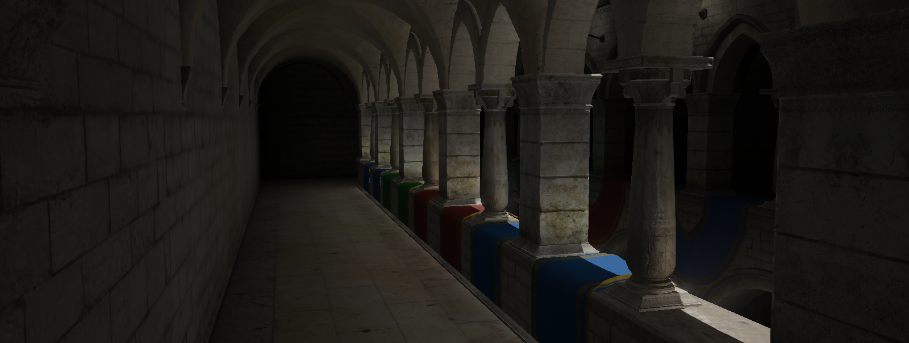

Voxel Cone Tracing
Last Updated: 5/4/22
What is Voxel Cone Tracing?
Voxel Cone Tracing (VCT) is a technique originally proposed by NVIDIA researchers in 2011 in this paper. This method of calculating indirect lighting has been mostly sidelined recently with the advent of hardware-accelerated raytracing (such as RTX) allowing more sophisticated methods of calculating GI--such as ray-traced irradiance fields, a topic I may wish to explore in the future. However, I had never implemented a GI system in a renderer before, and VCT interested me for a few reasons. First, I (sadly) do not have a GPU with hardware-accelerated raytracing at the moment. That eliminated many options for me. Similarly, I wanted a system that could run smoothly (~60 FPS) on older, mid-range hardware (such as my 1050Ti). Second, I found that while some implementation details are tricky, the concept of VCT is fairly intuitive. As such, I set out to implement a (simplified) version of the paper mentioned above.
VCT can be broken down into two stages. The first is the voxelization of the scene and its illumination into memory. For those unfamiliar, a voxel is simply a value in a 3D grid. So to voxelize the scene is to take the scene and store all relevant information (illumination, normal) into this grid structure. This allows for an efficient lookup for illumination at any given point. The second stage is to sample this data to calculate indirect illumination. For each pixel, in addition to the direct illumination calculations, we can perform additional calculations to sample nearby voxels for their illumination data, allowing us to light that pixel accordingly.
Voxelization
So how do we even begin take our scene and convert it into this grid structure? What part of the scene are we voxelizing? Moreover, what is this grid structure in memory? For the first question, we can actually make use of the fixed-function graphics pipeline. By that I mean, we can treat this almost like an additional render pass, but instead of our output being a framebuffer texture target, our fragments can instead store values in a buffer. Below is a small snippet of a GLSL fragment shader that demonstrates what I mean.
...
struct VoxelType
{
uint color;
uint normal;
};
layout (std140, binding = 1) buffer VoxelBuffer {
VoxelType voxels[];
};
...
void main() {
ivec3 voxel = scaleAndBias(FragPos);
...
uint id = flatten3D(uvec3(voxel), uvec3(GISubdiv));
atomicMax(voxels[id].color, encodedColor);
atomicMax(voxels[id].normal, encodedNormal);
}
I mentioned that we could use the fragment's global position to index into this structure. How do we go from a global position of a fragment to an index in this buffer? Well, it depends on your desired implementation. There are two ways to think about where this grid lives in 3D space. The first is to have this grid be relative to the current view/camera. There are several possible advantages to this. We would not need to manually place bounds for our voxel. We would only be voxelizing data we need for the current frame, not values that may not get seen. However, this would require re-voxelization every frame, as any change in view would invalidate our previous voxel data. The second, and the method I chose that is also used by popular game engine Godot, is to place "probes" (bounds for the grid) into the scene manually for regions we wish to voxelize. This also allows us to simply voxelize offline or at load-time, greatly reducing the computation required. This, of course, has the obvious drawback that GI is static in the scene. Depending on the capability of the underlying hardware the renderer could either use the "static" data or revoxelize every frame. My definition of a probe is fairly simple:
class GIProbe {
public:
std::shared_ptr VoxelTex;
uint32_t Subdiv = 128;
float Energy = 1.0f;
GIProbe() = default;
};